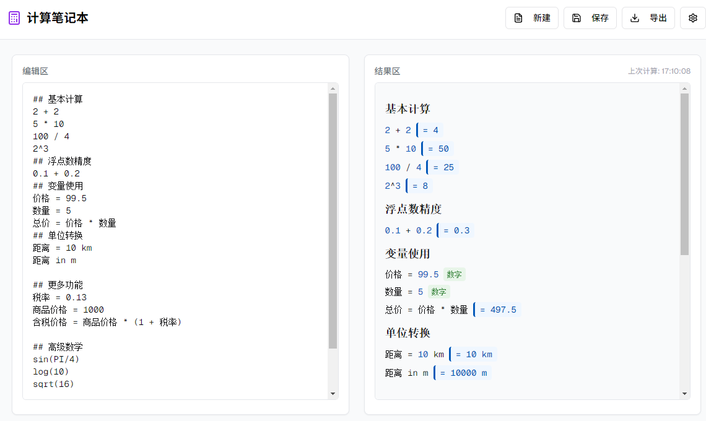

首页
使用ai从零开始实现一个在线计算笔记本：NoteCalc
这个计算笔记本项目源于
NoteCalc
的启发，还有一些类似的产品，但基本都是国外开发的，不支持中文变量。我想创建一个中文友好的实时计算笔记工具。
借助
TsFullStack
发布的
在线体验：NoteCalc
，
github地址
。
我本来是打算自己写的，因为感觉这个应该挺复杂，ai 可能把握不住，但我尝试了一下 v0 来帮我实现，在迭代了 37 版之后基本可用了，这着实惊艳到我了。
你可以在
https://v0.dev/chat/notecalc3-0B8uQmEirDI
查看我的全程提示操作。

利用 Mathjs 支持了基本的加减乘除/变量/高精度浮点数计算
遇到的问题
1.
中文变量名支持
：期间和 v0 切磋了很多次他才能正确的支持中文变量
后续计划
基于
TsFullStack
来实现用户计算笔记的云存储和分享功能
支持 url 参数的分享功能
支持浏览器本地存储